1024A10 crank shaft - r + r with engine removed - check main and connecting rod bearingand replace if necessary
- Path
- Procedures > 10 ENGINE UNIT > 1024 CRANKSHAFT AND FLYWHEEL > 1024A crank shaft > 1024A10 crank shaft - r + r with engine removed - check main and connecting rod bearingand replace if necessary
- Kind
- repair procedure (removal / refitting; the operation number is the code)
- Applies to
- all engines; all production periods
- Interactive page
- https://sloeber94.github.io/elrnDB-fMltpl/en/#/2892344
Applies to: engines: 1.6 16v; all production periods
 Removing
Removing
 Refitting
Refitting1004D10 power unit (manual gearbox), removed, remove and re-build
1. Using the tool (1a), lock the gear, undo the fixing bolt (1b) and remove the gear (1c).
2. Remove the crankshaft gear from the housing on the shaft.
 | Name | Country |
|---|---|---|
1a | Counter-torque | 1.860.765.000 |
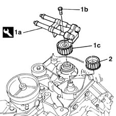
Applies to: engines: 1.6 16v; all production periods
1. Undo the bolts and nut.
2. Remove the timing belt lower rear shield.
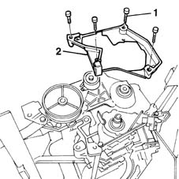
Applies to: engines: 1.6 16v; all production periods
1. Unscrew the retaining bolts
2. Remove the crankshaft front cover.
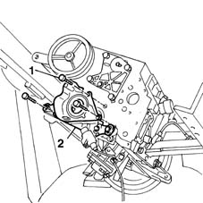
Applies to: engines: 1.6 16v; all production periods
1. Position the flywheel retainer.
2. Undo the fixing bolts (2a) and remove the clutch plate (2b).
| Name | Country |
|---|---|---|
1 | Counter-torque | 1.860.846.000 |
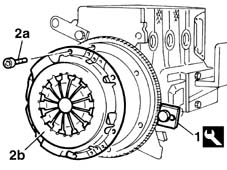
Applies to: engines: 1.6 16v; all production periods
1. Unscrew the retaining bolts
2. Remove the flywheel together with the flywheel lock positioned previously.
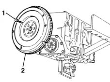
Applies to: engines: 1.6 16v; all production periods
1. Undo the fixing bolts (1a) and remove the crankshaft rear cover (1b).
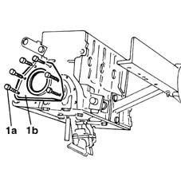
Applies to: engines: 1.6 16v; all production periods
1. Unscrew the retaining bolts
2. Remove the engine oil pump (2a) complete with draught element (2b).
Recover the oil pump gasket.
3. Undo the fixing bolt (3a) and remove the section inside the cylinder block/crankcase (3b) for the oil dipstick.
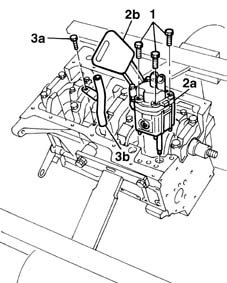
Applies to: engines: 1.6 16v; all production periods
1. Using the service bolts (1a), fit the tool (1b) for rotating the crankshaft.
| Name | Country |
|---|---|---|
1b | Flange | 1.860.815.000 |
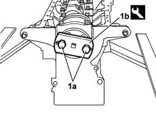
Applies to: engines: 1.6 16v; all production periods
1. Undo the fixing bolts (1a) and remove the connecting rod cap (1b).
2. Remove the bottom big end bearing shell.
3. Remove the connecting rod - piston assembly.
4. Remove the upper connecting rod half-bearing.
Proceed in the same way with the removal of the pistons and connecting rods for the remaining cylinders.
5. Undo the fixing bolts (5a) and remove the bearing caps (5b).
6. Remove the lower bearings.
7. Remove the crankshaft.
8. Remove the upper bearings.
9. Remove the thrust rings.
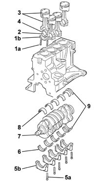
Applies to: engines: 1.6 16v; all production periods
Refitting
RemovingClean the oil ports in the crankcase using a compressed air gun.
Measure the diameter of the main journals and the diameter of the crank pins.
 | Measurement | Value | |
|---|---|---|---|
- | Main bearing journal diameter (mm) | Category B | 50.780 - 50.790 |
Classe A | 50.790 - 50.800 | ||
| Measurement | Value | |
|---|---|---|---|
- | Crankpin diameter (mm) | Category B | 45.503 - 45.513 |
Classe A | 45.513 - 45.523 | ||
Applies to: engines: 1.6 16v; all production periods; only with equipment: Euro 3
Measure the diameter of the main journals and the diameter of the crank pins.
| Measurement | Value | |
|---|---|---|---|
- | Main bearing journal diameter (mm) | Pos. 1 | 50.794÷50.800 |
Pos. 2 | 50.787÷50.793 | ||
Pos. 3 | 50.780÷50.786 | ||
| Measurement | Value | |
|---|---|---|---|
- | Crankpin diameter (mm) | Category B | 45.510 ÷ 45.517 |
Category C | 45.503 ÷ 45.509 | ||
Class A | 45.518 ÷ 45.523 | ||
Applies to: engines: 1.6 16v; all production periods
If the diameter of the main journals is not within the recommended values, regrind them in accordance with the recommended undersize.
| Measurement | Value | |
|---|---|---|---|
- | Main bearing journal undersize (mm) | 0.254 - 0.508 |
If the diameter of the crankpins is not within the recommended values, regrind them in accordance with the recommended undersize.
| Measurement | Value | |
|---|---|---|---|
- | Crankpin undersize (mm) | 0.254 - 0.508 |
Check the crankshaft bearings, taking into account that no adjustment operations should be carried out to the half-bearings. If there are grooves or signs of seizing then they must be replaced.
Fit the half-bearings, making sure that they are scrupulously clean and taking care to position the half-bearing without splining on the centre bearing support.
If the crankshaft has been reground, fit new, oversize half-bearings to restore the original tolerance conditions.
1. Fit the crankshaft in the special housing in the cylinder block/crankcase.
2. Fit the calibrated wire (Plastigage) to measure the main journal cleaarance.
3. Fit the bearing caps.
4. Tighten the cap bolts to torque.
 | Fastening | Component | Ø | Value (daNm) |
|---|---|---|---|---|
4 | Bolt | MAIN BEARING CAPS | M10 | 8 |
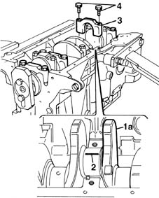
Applies to: engines: 1.6 16v; all production periods
1. Remove the bearing caps fitted previously and, using a suitable graduated mesuring instrument (1a), measure the clearance shown by the calibrated wire (1b).
| Measurement | Value | |
|---|---|---|---|
1b | Clearance between crankshaft bearings - main journals (mm) | 0.019 - 0.508 |
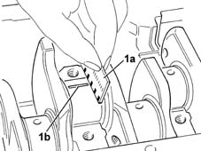
Applies to: engines: 1.6 16v; all production periods
Measure the clearance at all the bearings, taking care to do it one bearing at a time without ever moving the crankshaft.
Check that the thickness of the thrust washers is within the recommended value.
| Measurement | Value | |
|---|---|---|---|
- | Thickness of thrust washers (mm) | 2.310 - 2.360 |
Fit the thrust washers on the flywheel side first support.
Fit the bearing caps.
Tighten the cap bolts to torque.
| Fastening | Component | Ø | Value (daNm) |
|---|---|---|---|---|
- | Bolt | MAIN BEARING CAPS | M10 | 8 |
Position the tool for rotating the crankshaft.
| Name | Country |
|---|---|---|
- | Flange | 1.860.815.000 |
Rotate the crankshaft using the tool fitted previously.
1. The connecting rod-piston assemblies are fitted with the engine rotation arrow (1a) stamped on the piston crown facing the inlet side.
2. Check that the stamps for the cylinder liner/bore to which the connecting rod belongs are on the exhaust side.
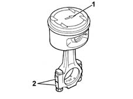
Applies to: engines: 1.6 16v; all production periods
1. Fit the connecting rod-piston assembly (1a), complete with half-bearing, using the tool (1b) for compressing the piston rings and the subsequent fitting of the piston in the liner/bore.
| Name | Country |
|---|---|---|
- | Fitting tool | 1.860.700.000 |
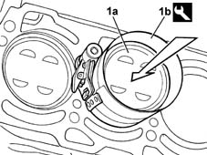
Applies to: engines: 1.6 16v; all production periods
1. Check the clearance of the connecting rod bearings, using the calibrated wire (Plastigage) to measure the fitting clearance.
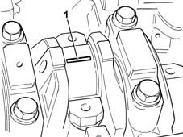
Applies to: engines: 1.6 16v; all production periods
Fit the connecting rod cap.
Tighten the nuts fixing the connecting rod caps to torque.
| Fastening | Component | Ø | Value (daNm) |
|---|---|---|---|---|
- | Nut | CONNECTING ROD CAP FASTENERS | M9 | 5.1 |
Undo the nuts and remove the connecting rod cap fitted previously.
1. Using a suitable graduated measuring instrument (1a), measure the clearance on the calibrated wire (1b).
| Measurement | Value | |
|---|---|---|---|
1b | Thickness of thrust washers (mm) | 2.310 - 2.360 |
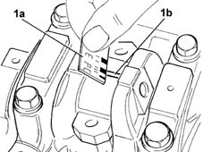
Applies to: engines: 1.6 16v; all production periods
If the figure measured is not within the recommended values, replace the connecting rod bearings.
Carry out this check on all the bearings, one at a time, without ever rotating the crankshaft.
Fit the connecting rod cap.
Tighten the nuts fixing the connecting rod caps to torque.
| Fastening | Component | Ø | Value (daNm) |
|---|---|---|---|---|
- | Nut | CONNECTING ROD CAP FASTENERS | M9 | 5.1 |
Fit the section of the engine oil dipstick inside the cylinder block/crankcase.
Position a new gasket on the oil pump.
Fit the oil pump tightening the fixing bolts to torque.
| Fastening | Component | Ø | Value (daNm) |
|---|---|---|---|---|
- | Bolt | ENGINE OIL PUMP | M6 | 2.5 |
Fit the crankshaft rear cover.
Fit the engine flywheel, securing the fixing bolts.
Fit the engine flywheel lock.
| Name | Country |
|---|---|---|
- | Counter-torque | 1.860.846.000 |
Tighten the flywheel fixing bolts to torque.
| Fastening | Component | Ø | Value (daNm) |
|---|---|---|---|---|
- | Bolt | FLYWHEEL | M10 | 8.3 |
Align the driven disc for fitting the clutch assembly using the centring pin.
Tighten the bolts fixing the clutch to the engine flywheel.
| Name | Country |
|---|---|---|
- | Clutch centering | 1.870.447.000 |
Fit the new gasket for the cylinder block/crankcase cover.
1. Remove the gasket (1a) from the front cover, using a drift in the slot (1b).
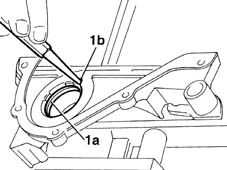
Applies to: engines: 1.6 16v; all production periods
Fit the front cover to the engine block.
Tighten the fixing bolts to torque.
| Fastening | Component | Ø | Value (daNm) |
|---|---|---|---|---|
- | Bolt | CRANKSHAFT FRONT COVER | M6 | 0.7 |
1. Using the tool, fit the new oil seal in the housing.
| Name | Country |
|---|---|---|
1 | Fitting tool | 1.860.878.000 |
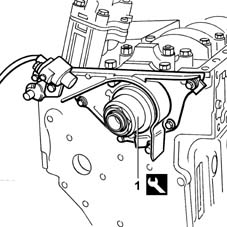
Applies to: engines: 1.6 16v; all production periods
Fit the timing belt lower rear shield.
Clean the crankcase and oil sump contact surfaces to remove traces of silicone sealant.
Apply silicone sealant around the edge of the crankcase sump.
Fit the oil sump to the crankcase.
Tighten the oil sump fixing bolts to torque.
| Fastening | Component | Ø | Value (daNm) |
|---|---|---|---|---|
- | Bolt | OIL SUMP | M6 | 0.9 |
Clean the cylinder head and crankcase contact surfaces.
Position the cylinder head gasket with the wording 'ALTO' [TOP] facing you.
In order for the polymerization process to take place it is necessary:
- to keep the gasket in its sealed plastic container
- not to take out of its container until ready to fit;
- not to lubricate the gasket or contaminate with oil, and to ensure the crankcase and cylinder head surfaces are clean.
Before fitting the cylinder head, rotate the crankshaft so that the piston for cylinder no. 1 is approximately at T.D.C.
Position the cylinder head on the crankcase.
1. Tighten the cylinder head bolts, following the order shown in the figure below.
2. Using the tool (2a), tighten the head fixing bolts (2b) to torque following the order illustrated previously.
| Name | Country |
|---|---|---|
2a | Protractor | 1.895.897.000 |
| Fastening | Component | Ø | Value (daNm) |
|---|---|---|---|---|
- | Bolt | CYLINDER HEAD | M10 x 1.25 | 4 + 90° + 90° |
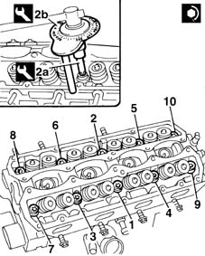
Applies to: engines: 1.6 16v; all production periods
Connect the water pump coolant pipe.
Fit the exhaust manifold to the cylinder head.
Fit the power assisted steering pump mounting bracket on the exhaust manifold.
Tighten the nuts fixing the exhaust manifold to the cylinder head.
| Fastening | Component | Ø | Value (daNm) |
|---|---|---|---|---|
- | Bolt | EXHAUST MANIFOLD/S | M6 | 3 |
Fit the exhaust manifold heat shield.
Tighten the nuts fixing the bulkhead.
Fit a new cylinder head extension gasket.
Fit the camshaft housing, taking care not to let the hydraulic tappets drop.
Tighten the cylinder head extension bolts to torque.
| Fastening | Component | Ø | Value (daNm) |
|---|---|---|---|---|
- | Bolt | CYLINDER HEAD EXTENSION GASKET | M6 | (exhaust side) 1,5 |
Position the new gasket for the inlet side camshaft housing.
Fit the camshaft housing, taking care not to let the hydraulic tappets drop.
Tighten the cylinder head extension bolts to torque.
| Fastening | Component | Ø | Value (daNm) |
|---|---|---|---|---|
- | Bolt | CYLINDER HEAD EXTENSION GASKET | M6 | 1.5 |
Fit the rear protection for the timing belt.
Fit the fixed tensioner for the timing belt tightening the fixing bolt to torque.
| Fastening | Component | Ø | Value (daNm) |
|---|---|---|---|---|
- | Bolt | FIXED TENSIONER | M12 x 1.25 | 8.7 |
Fit the camshaft pullies without tightening the fixing bolts.
Remove the camshaft rear covers from the camshaft housings.
With the piston set to the newly-obtained TDC position, adjust camshaft timing.
1. Position camshaft timing adjustment tools.
2. When fitting the tools, align shaft seat (2a) with key (2b) on the tools.
3. Tighten the tool retaining nuts.
| Name | Country |
|---|---|---|
1 | Template | 1.860.874.000 |
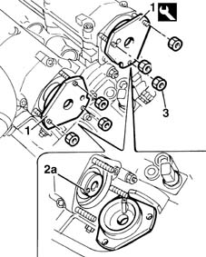
Applies to: engines: 1.6 16v; all production periods
Remove the spark plugs from their sockets on the cylinder head.
1. Dial gauge (1a) supported by probe (1b) into the socket of the cylinder no. 1 spark plug. Turn the crankshaft with small, even movements until the dial gauge shows the cylinder no. 1 piston is at TDC.
| Name | Country |
|---|---|---|
1b | Probe mount | 1.860.895.000 |
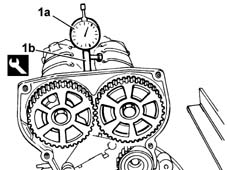
Applies to: engines: 1.6 16v; all production periods
1. Refit the timing drive belt, fitting it initially on the crankshaft gear (1a), the oil pump gear (1b), the fixed pulley (1c), the inlet timing pulley (1d), the exhaust timing pulley (1) and, lastly, on the automatic tensioning device (1f).
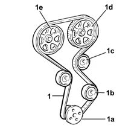
Applies to: engines: 1.6 16v; all production periods
1. Withdraw the retaining bolt.
2. Position the toothed belt tensioning tool.
| Name | Country |
|---|---|---|
2 | Belt tensioner | 1.860.876.000 |
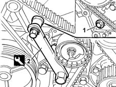
Applies to: engines: 1.6 16v; all production periods
1. Adjust the tool until the belt is as taut as possible, i.e. when the moving belt tensioner pointer is at the end of its travel.
2. Tighten the tensioner retaining nut.
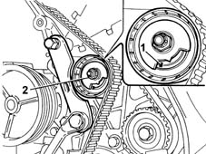
Applies to: engines: 1.6 16v; all production periods
Use the pulley tightening tool to tighten the camshaft pulley retaining bolts to the specified torque.
| Fastening | Component | Ø | Value (daNm) |
|---|---|---|---|---|
- | Bolt | TIMING GEAR DRIVEN PULLEYS | M12 | 12 |
| Name | Country |
|---|---|---|
- | Support for counter-torque | 1.860.831.000 |
| Name | Country |
|---|---|---|
- | Adaptor | 1.860.885.000 |
Remove the camshaft timing tools.
| Name | Country |
|---|---|---|
- | Template | 1.860.874.000 |
Remove the dial gauge together with the probe.
| Name | Country |
|---|---|---|
- | Probe mount | 1.860.895.000 |
Rotate the crankshaft through two revolutions in its normal direction of rotation.
1. Loosen the belt tensioner retaining nut and use tool (1a) to slightly release belt tension until moving reference (1b) is aligned with fixed reference (1c) on the tensioning device.
2. Tighten the tensioning device retaining nut to the specified torque.
| Name | Country |
|---|---|---|
1a | Belt tensioner | 1.860.876.000 |
| Fastening | Component | Ø | Value (daNm) |
|---|---|---|---|---|
2 | Bolt | MOBILE TIMING TENSIONER | M6 | 2.5 |
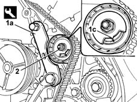
Applies to: engines: 1.6 16v; all production periods
Remove the tool and tighten the retaining bolt removed previously to the specified torque in order to fit the tensioning tool.
Fit the rear covers for the camshafts.
Fit the support for the ignition coils, tightening the nuts fixing the support and the covers to torque.
| Fastening | Component | Ø | Value (daNm) |
|---|---|---|---|---|
- | Nut | INTAKE AND EXHAUST CAMSHAFT REAR COVER | M6 | 0.9 |
Position the flywheel retainer.
| Name | Country |
|---|---|---|
- | Counter-torque | 1.860.846.000 |
Fit the crankshaft pulley with its phonic wheel.
Tighten the nut to torque.
| Fastening | Component | Ø | Value (daNm) |
|---|---|---|---|---|
- | Nut | CRANKSHAFT PULLEY | M20 | 19 |
Remove the flywheel lock.
Fit the single timing belt shield.
Fit the oil dipstick at the same time as the inlet manifold.
Fit the wiring duct on the inlet manifold.
Tighten the lower bolt fixing the oil dipstick and the nuts fixing the inlet manifold.
| Fastening | Component | Ø | Value (daNm) |
|---|---|---|---|---|
- | Nut | INLET MANIFOLD | M8 | 2.5 |
Fit the air intake casing.
Tighten the bolts and nuts securing the casing to the cylinder head extension.
| Fastening | Component | Ø | Value (daNm) |
|---|---|---|---|---|
- | Bolt | INLET AIR DUCT | M7 | 1.5 |
Tighten the bolts and nuts to the intake manifold.
Fit the shield and fix it using the nuts.
Connect the coolant pipe.
Fit the engine oil filler pipe.
Tighten the fixing bolts and connect the oil vapour inlet pipe.
Fit the ignition coils on the special mounting bracket, tightening the bolts to torque.
| Fastening | Component | Ø | Value (daNm) |
|---|---|---|---|---|
- | Bolt | IGNITION COIL/REEL | M6 | 0.9 |
Connect the supply connections for the coils to the spark plugs.
Position the power assisted steering pump complete with supports.
1. Fit the timing belt on the water pump and power assisted steering pump pullies.
2. Working on the bolt and the adjustment nut, tension the power assisted steering pump drive belt.
3. Using a torque wrench, check that the belt tension is correct.
4. Tighten the bolts fixing the power assisted steering pump brackets to torque.
Fit the plastic shield for the pump.
| Name | Country |
|---|---|---|
3 | Torque wrench | 1.895.762.000 |
| Measurement | Value | |
|---|---|---|---|
- | Power steering pump new belt tension (daN) | 32 - 45 |
| Fastening | Component | Ø | Value (daNm) |
|---|---|---|---|---|
4 | Nut | POWER STEERING PUMP SUPPORT/BRACKET | M10 | 5 |
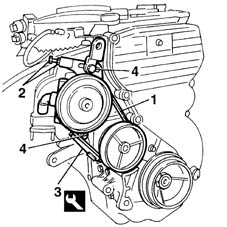
Applies to: engines: 1.6 16v; all production periods
Position the electrical wiring and connect the electrical connections.
 | Name | Connector |
|---|---|---|
- | Detonation sensor |
| Name | Connector |
|---|---|---|
- | RPM sensor |
| Name | Connector |
|---|---|---|
- | Brake fluid level sensor (switch) |
| Name | Connector |
|---|---|---|
- | Alternator |
| Name | Connector |
|---|---|---|
- | Injector |
| Name | Connector |
|---|---|---|
- | Ignition coil |
| Name | Connector |
|---|---|---|
- | Engine coolant temperature sensor |
| Name | Connector |
|---|---|---|
- | Throttle position sensor |
| Name | Connector |
|---|---|---|
- | Idle actuator |
| Name | Connector |
|---|---|---|
- | Integrated air temperature sensor |
Position the part of the wiring concerned in the special duct.
1004D10 power unit (manual gearbox), removed, remove and re-build
Applies to: engines: 1.9 JTD 8V; all production periods
Removing
Refitting1020D17 engind front cover - r r
1. Fit the tool.
| Name | Country |
|---|---|---|
1 | Counter-torque | 1.860.846.000 |
2. Undo the bolts (2a) and remove the clutch (2b).
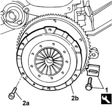
Applies to: engines: 1.9 JTD 8V; all production periods
1. Undo the bolts (1a) and remove the flywheel (1b).
Remove the tool.
| Name | Country |
|---|---|---|
- | Counter-torque | 1.860.846.000 |
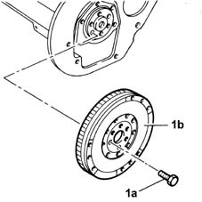
Applies to: engines: 1.9 JTD 8V; all production periods
1. Undo the bolts (1a) and remove the crankcase rear cover (1b) with the oil seal integrated.
2. Fit the tool.
| Name | Country |
|---|---|---|
4 | Flange | 1.860.815.000 |
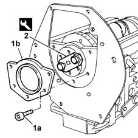
Applies to: engines: 1.9 JTD 8V; all production periods
Rotate the crankshaft using the tool fitted previously until the pistons of cylinders no. 1 and no. 4 are at B.D.C.
1. Undo the bolts (1a) and remove the connecting rod caps (1b) for cylinders 1 and 4.
2. Remove the lower connecting rod half bearings for cylinders no. 1 and no. 4.
Proceed in the same way to remove the connecting rod caps and bearing halves for cylinders 2 and 3.
3. Undo the bolts (3a) and remove the bearing caps (3b).
4. Remove the lower main journal half-bearings.
5. Remove the crankshaft.
6. Remove the upper connecting rod half-bearings.
7. Remove the upper main journal half-bearings.
8. Remove the thrust washers from the 3rd main bearing.
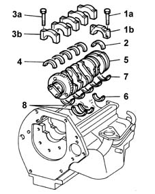
Applies to: engines: 1.9 JTD 8V; all production periods
Refitting
RemovingVisually inspect the condition of the main journal and connecting rod half-bearings and, if necessary, replace them.
Check that the thickness of the main journal half-bearings is within the recommended values; if this is not the case, replace them. if this is not the case, replace them.
| Measurement | Value | |
|---|---|---|---|
- | Thickness (mm) | Category B | 1.839 - 1.843 |
Category C | 1.842 - 1.846 | ||
Classe A | 1.836 - 1.840 | ||
Check that the thickness of the connecting rod half-bearings is within the recommended values; if this is not the case, replace them. if this is not the case, replace them.
| Measurement | Value | |
|---|---|---|---|
- | Connecting rod half bearing thickness (mm) | Category B | 1.530 ÷ 1.534 |
Category C | 1.533 ÷ 1.537 | ||
Classe A | 1.527 ÷ 1.531 | ||
Fit the upper main journal half-bearings in the cylinder block/crankcase.
Fit the crankshaft.
1. Apply calibrated wire (plastigage) to measure main journal backlash.
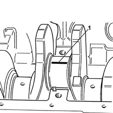
Applies to: engines: 1.9 JTD 8V; all production periods
1. Fit the main journal caps complete with half-bearings.
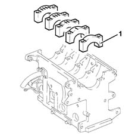
Applies to: engines: 1.9 JTD 8V; all production periods
1. Tighten the bearing cap bolts (1a) to torque using the angular tightening tool (1b).
| Fastening | Component | Ø | Value (daNm) |
|---|---|---|---|---|
1a | Bolt | MAIN BEARING CAPS | M12 | 2.4 - 2.6 + 100° |
| Name | Country |
|---|---|---|
1b | Protractor | 1.860.942.000 |
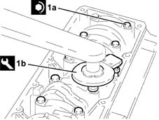
Applies to: engines: 1.9 JTD 8V; all production periods
1. Remove the main bearing caps and measure journal backlash using a graduated measuring device.
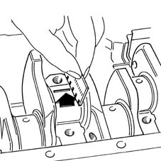
Applies to: engines: 1.9 JTD 8V; all production periods
Fit the thrust washers on the 3rd main bearing.
1. Fit the main journal caps complete with half-bearings.
Applies to: engines: 1.9 JTD 8V; all production periods
1. Tighten the bolts (1a) for the connecting rod caps to torque, using the angular tightening tool (1b).
| Fastening | Component | Ø | Value (daNm) |
|---|---|---|---|---|
1a | Bolt | BIG END BEARING CAPS | M9 | 2.4 - 2.6 + 60° |
| Name | Country |
|---|---|---|
1b | Protractor | 1.860.619.000 |
Applies to: engines: 1.9 JTD 8V; all production periods
Fit the upper connecting rod half-bearings on the connecting rods.
1. Apply calibrated wire (plastigage) to measure crankpin backlash.
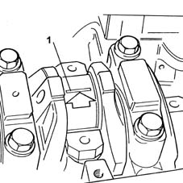
Applies to: engines: 1.9 JTD 8V; all production periods
Fit the connecting rod caps with bearing halves.
1. Tighten bolts (1a) to torque using angular tightening tool (1b).
| Fastening | Component | Ø | Value (daNm) |
|---|---|---|---|---|
1a | Bolt | BIG END BEARING CAPS | M9 | 2.4 - 2.6 + 60° |
| Name | Country |
|---|---|---|
1b | Protractor | 1.860.942.000 |
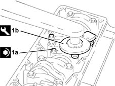
Applies to: engines: 1.9 JTD 8V; all production periods
1. Measure the clearance between pin and bearings using a measuring device. Then retighten the connecting rod cap bolts to torque as described previously.
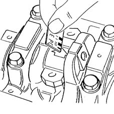
Applies to: engines: 1.9 JTD 8V; all production periods
Fit the upper connecting rod half-bearings on the connecting rods.
Rotate the crankshaft using the tool fitted previously until cylinders no. 1 and no. 4 are at B.D.C.
Fit the connecting rod caps and bearing halves for cylinders 1 and 4 and screw in the bolts without tightening.
Do the same to fit the big end bearing caps of cylinders no. 2 and no. 3.
1. Tighten the bolts (1a) for the connecting rod caps to torque, using the angular tightening tool (1b).
| Fastening | Component | Ø | Value (daNm) |
|---|---|---|---|---|
1a | Bolt | BIG END BEARING CAPS | M9 | 2.4 - 2.6 + 60° |
| Name | Country |
|---|---|---|
1b | Protractor | 1.860.942.000 |
Applies to: engines: 1.9 JTD 8V; all production periods
Remove the tool.
| Name | Country |
|---|---|---|
- | Flange | 1.860.815.000 |
1. Fit the crankcase rear cover.
2. Tighten the crankcase rear cover bolts to torque.
| Fastening | Component | Ø | Value (daNm) |
|---|---|---|---|---|
2 | Bolt | FLYWHEEL SIDE COVER | M6 | 0.8 - 1.0 |
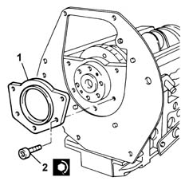
Applies to: engines: 1.9 JTD 8V; all production periods
Fit the tool.
| Name | Country |
|---|---|---|
- | Counter-torque | 1.860.846.000 |
Fit the flywheel and tighten the bolts to torque.
| Fastening | Component | Ø | Value (daNm) |
|---|---|---|---|---|
- | Bolt | FLYWHEEL | M12 | 13.6 - 16.8 |
Remove the tool.
| Name | Country |
|---|---|---|
- | Counter-torque | 1.860.846.000 |
Topics linked from this page (13)
- 1004D10 power unit (manual gearbox), removed, remove and re-build
- 1004E10 engine, removed - remove cylinder head and oil sump for inspection - includes positioning on stand and removal
- 1020D17 engind front cover - r r
- A10 Alternator
- A30 Ignition coil
- K30 Brake fluid level sensor (switch)
- K43 Integrated air temperature sensor
- K45 Engine coolant temperature sensor
- K46 RPM sensor
- K50 Detonation sensor
- K56 Throttle position sensor
- N70 Injector
- N74 Idle actuator